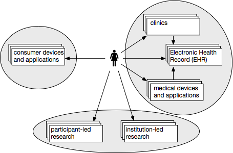

Perfect Health Repo Desiderata

I have been brainstorming on what a (near)1 perfect data repository and information discovery platform would be, both more generally for any discipline but also specifically for the health/medical fields. At its minimum, a repository would allow researchers to upload their content, package it appropriately, choose an appropriate license, add and useful metadata. But a repository is worthless if it only stores data; it should also allow searching for and finding data as well as researchers. Given that, below are the major functional features of a useful repo.
A note on the repo: As shown in the figure above, here I am specifically considering repo 3, that is, a repository that holds primarily research data contributed by either institutional or participant-led research groups. A true Citizen-Sourced Data Commons would be made of such and a few other kinds of repos.
A note on vocabulary: I use the notion of a project as being a (typically funded) investigation that initiates several studies each of which result in some data, software to analyze that data, and resulting conclusions published in a paper. But sometimes a researcher may also conduct a study that is not necessarily funded under a project. So, a researcher may be associated with zero or more projects, each of which may have zero or more “collections” of data, software and publications, both peer-reviewed and informal (slides, videos, audio files, magazine articles, book chapters, whatever). Some collections may have only data, some only software, some data and software, and so on. In fact, each combination of data, software, paper may be represented. In other words, there is a many-to-many relationship between researchers, projects, data, software, and literature.
Here we go…
- Allow editing a digital object until it is frozen: A collection, by definition, is made up of parts. Each collection and its parts (hereafter called an “object”) should be considered “in-flux” until they are assigned a digital object identifier (DOI). Once frozen, that version of the object may be assigned a DOI. Any further changes in the object should require first spawning a new version and then repeating the cycle.
- Allow freezing an object: Once the contributor decides that an object is ready for public consumption, she freezes the object and gets a DOI for that object. As per the DOI Handbook, the DOI is made up of two major parts, an organizational prefix (fixed for the organization that owns the repo) and a suffix determined by the organization. The prefix and the suffix are separated by a slash. The suffix can further have versions separated by a dot and notification of a part of a collection separated by slashes as shown—doi:prefix/suffix/part.version
- Mint DOI, ARK, LSID or some other persistent ID after a collection is frozen: The prevailing winds seem to be behind DOI, and this is as cultural a decision as any. Some platforms offer more than one IDs, but starting with DOI is a minimum price of entry.
- Add truly OA licenses to the license chooser: Again, this is a cultural decision. The global open access community has settled on the definition of open access as defined by the Budapest Open Access Initiative (BOAI) and the Open Definition. Essentially, an open access resource should be free to use for any purpose whatsoever with no more than requiring credit or imposing a share-alike condition. This is equivalent to choosing CC BY or CC BY-SA licenses, or dedicating the resource to the public domain via CC0 Public Domain Dedication. Equivalent licenses from the Open Source Initiative may be chosen for software. For data, generally CC0 Public Domain Dedication is recommended. The license chooser should offer suitable OA licenses in order of increasing restrictions (most free first). One may use the Creative Commons License Chooser widget as the starting point and customize it.
- Provide object-level history: Object-level history is essential to determine when it was frozen, when a license was assigned, when and if the license was changed, etc. At the very least, provide the date, and a short description of the changes from the previous version. The versioning system should follow the semantic versioning principles.
- Allow finding information without logging in: The repository should not have any content that is 100% private. That is, if you upload your content to the repository, it is expected that you want the world to learn about it. A minimum defined set of metadata about your content should be viewable by everyone. The recommended minimum metadata are:
- Name of content
- Short description of content
- Name and contact information of content owner so one may contact for additional information or permissions
- License under which content is offered
- If not open
- Reason for restrictions
- Expected time when restrictions might be lifted
- Categorize content from open to closed: Four categories of resources and the viewable and downloadable information about them can be imagined based on their level of openness:
- Not open at all: everyone can view minimum metadata without logging in (see #6 above)
- Open only to a select group of registered users who can view and download everything
- Open only to all registered users who can view and download everything
- Completely open to everyone who can view and download everything without logging in
- Online viewing: Provide online viewing of common data formats (CSV, XLS, DOC, PPT, map, PDB, PDF, text, syntax colored code, common image formats, etc.)
- Provide search filters so search may be limited to only public/OA collections: User should be able to search based on not just tags and categories but also license types and whether open or not.
- Suggest relevant collections: Based on a registered user’s profile, contributions and click history, offer suggestions of relevant contributors and collections. In the case of non-registered users, allow them to answer a few questions, or alternatively, use their click history to provide suggestions.
- Provide APIs to query the repo: Programmatic query of the underlying data should be possible via a RESTful interface. Whatever can be queried, viewed and downloaded via a browser should also be queryable and downloadable via the command line.
- URI as a first-class citizen: The result of every action on the web site is a change in state, and that state change should be represented by a unique URI. This would allow a user to bookmark any state and share it or come back to it. This also means that modal dialogs should be absolutely avoided unless they can also be activated by a direct URI call.
- Accommodate existing workflows of researchers: Any popular service that has a public API and registration/authentication mechanism, such as Github, Gitlab, Dropbox, Box, AWS, etc., should be pluggable in a collection so the content owner can include that content without physically migrating it to the repo.
- Provide analytics for everyone, registered repo users as well as anonymous users: Object-level metrics should be available to everyone. This should include number and origin of viewers, downloads, citations, etc. Additionally, the content owners should be able to download analytics for their content in a convenient format so they can include it in their own reports. This will provide them with an incentive to share their content.
- Provide reliable and easy protection of human-subject data: Integration with a project like Data Tags via step-by-step dialog should enable the content contributor to determine whether or not the content is subject to human-subject protection, and if yes, what are the recommended de-identification and encryption standards, as applicable. A bonus feature would be if the system offers a non-formal peer-review from a set of volunteer contributors who would help the contributor determine if the content is suitably de-identified for subsequent public consumption.
- Integrate with journals: Enable the repo to become the supplemental data repository for various journals. The journals in turns should require the contributors to provide supplemental material where applicable.
- Direct links to FAQs, Terms of Use/Service, Privacy Policy and License Terms: In keeping with #12 above, the legal use and conditions should be reachable by unique URIs. They should not be displayed in a popup modal box that does not change the address bar in the browser. Additionally, they should be accessible from every page, for example, from the footer of the page.
- Aesthetics: While aesthetics are a subjective criterion, there is undoubtedly a contextual look and feel in today’s websites that makes them appear modern. Muted colors, limited use of html tables, flat buttons, forms and other widgets, and prevalent use of XMLHttpRequest aka AJAX are a few of the key features of such websites. The repo should strive to portray a modern aesthetic.
- Truly-responsive: More and more people access web resources via phones and tablets. The repository should be truly responsive. That means it shouldn’t just shrink in size depending on the screen but it should offer functionality in different, device-appropriate ways. A mix of media queries and alternative resource designs would accomplish this.
I am interested in all manner of feedback on the above, but specifically on points 6 and 7. Please do give me a piece of your mind.
- Lest I be accused of being pompous. However, the use of the term desiderata was inspired by Erin Holve ↩